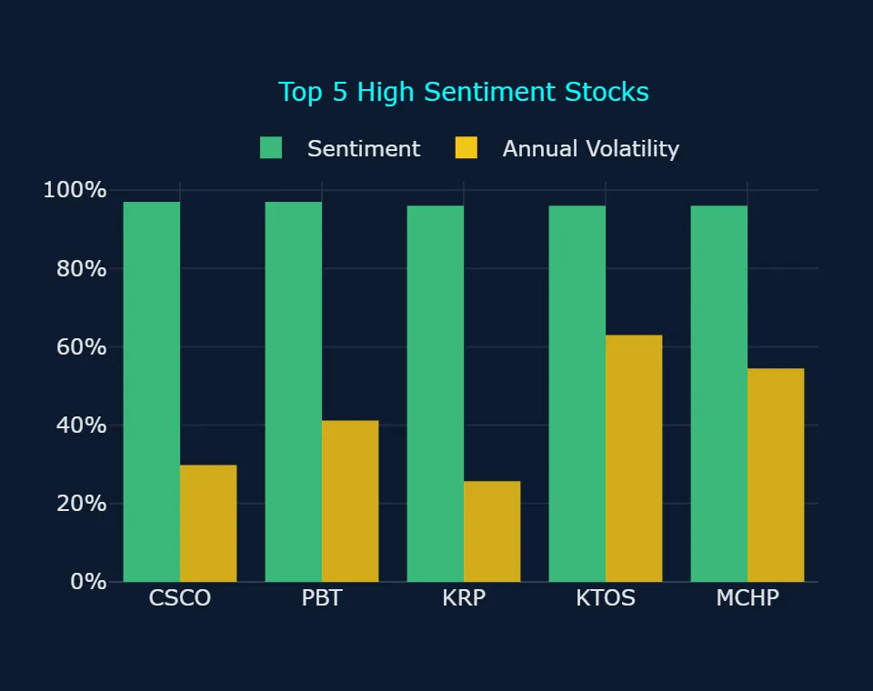
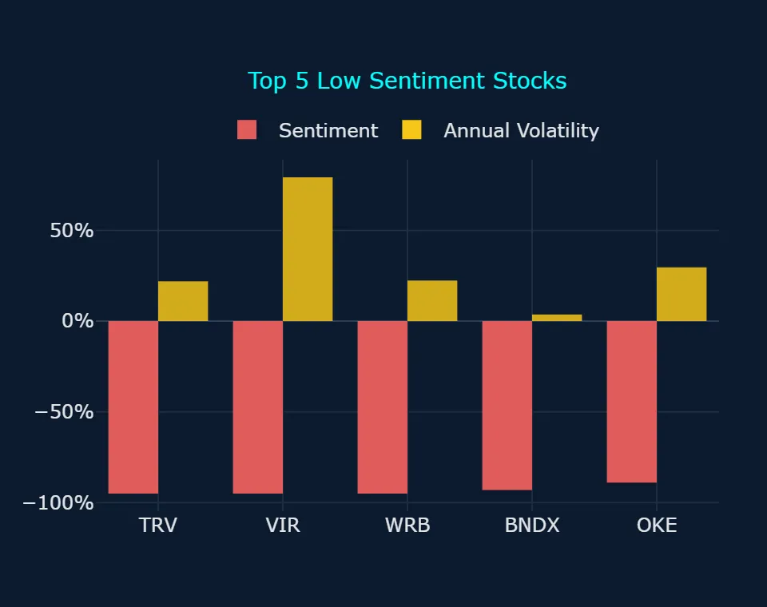
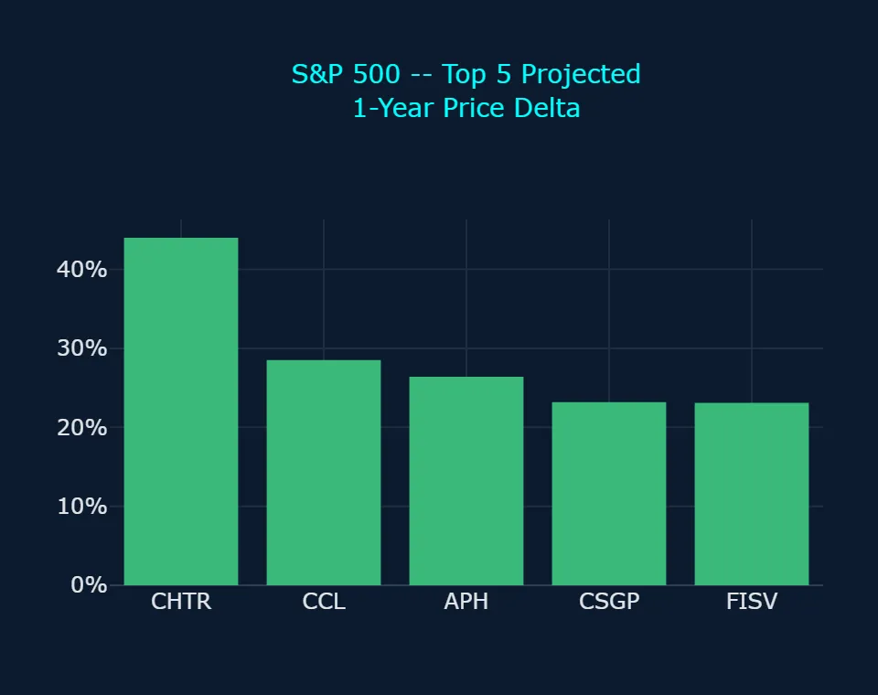
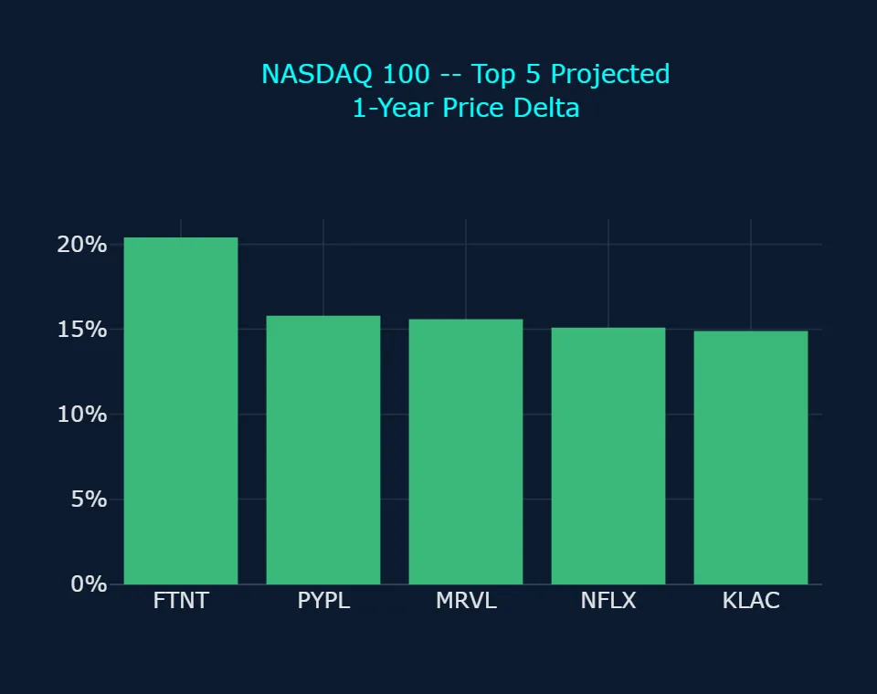
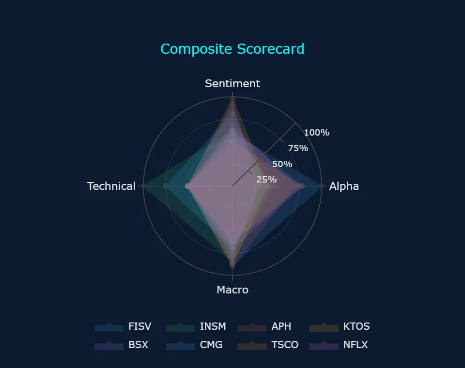
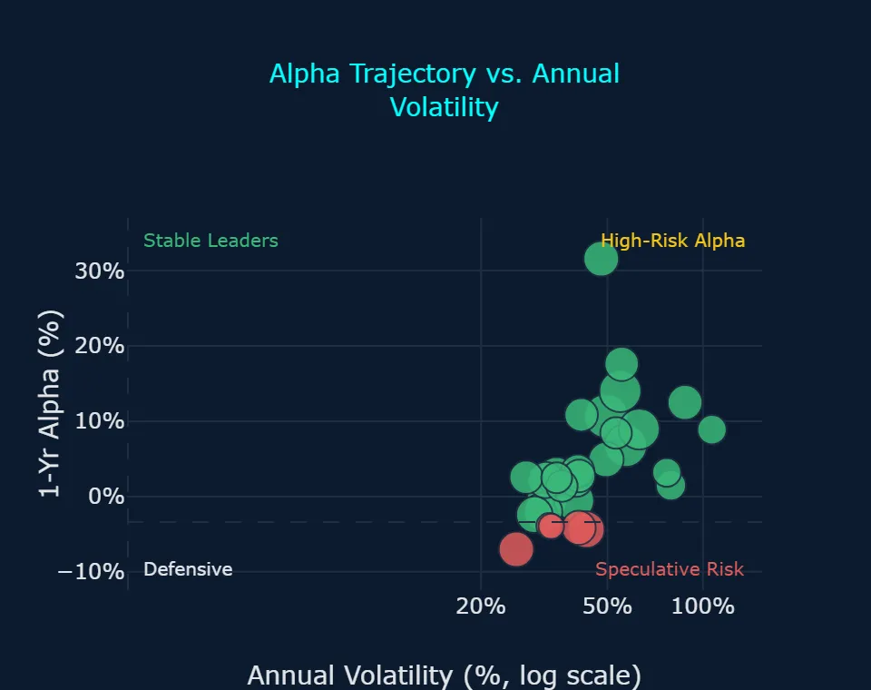
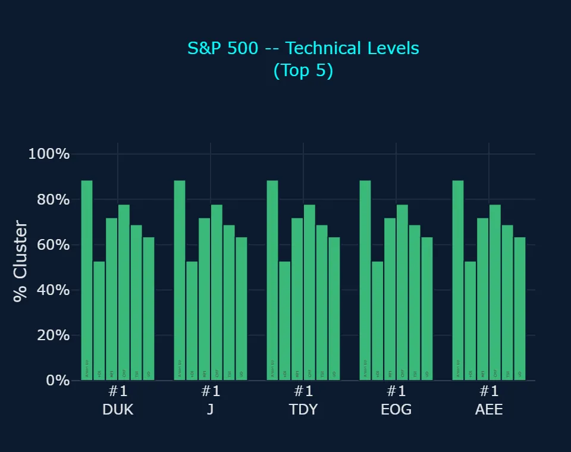
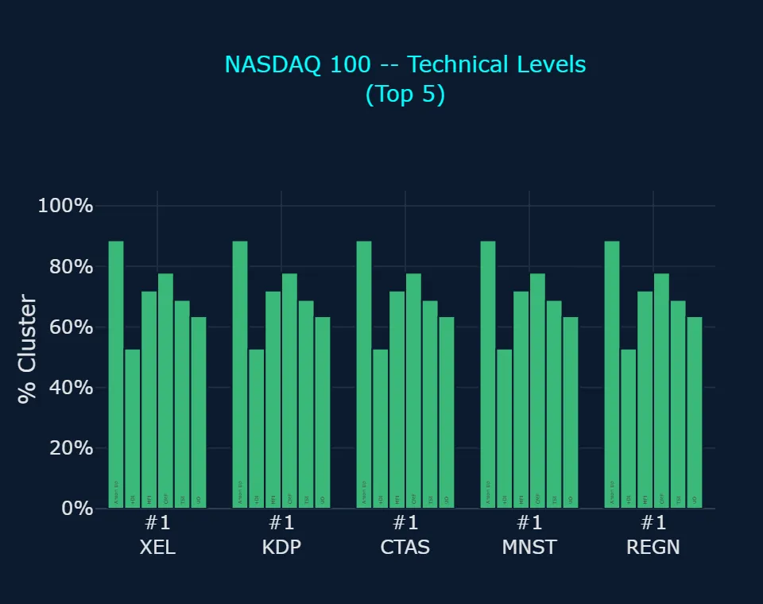
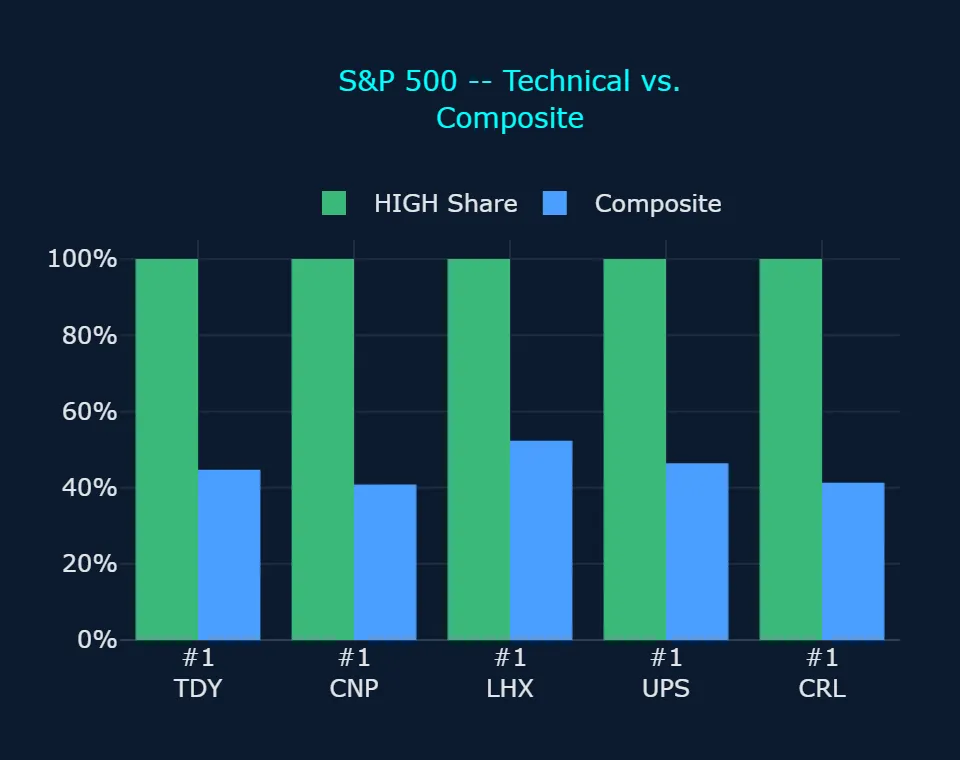
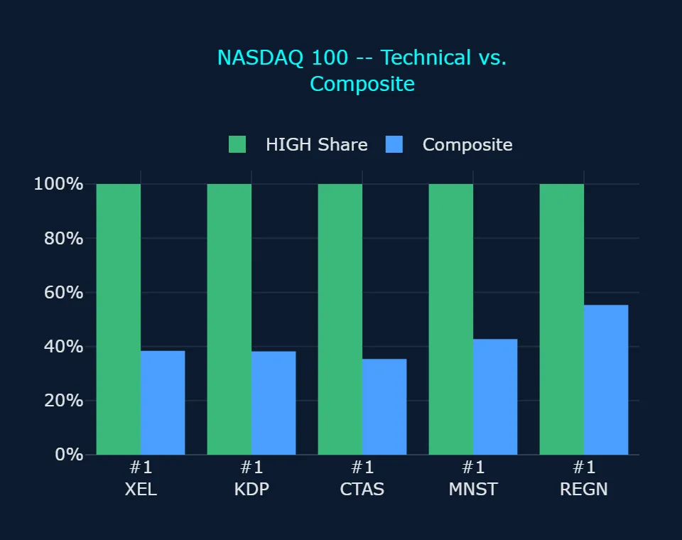

Zoonova AI: Closing Bell Market Report – October 30, 2026
Session Quantitative Briefing: The Zoonova AI Intelligence Engine executes a hybrid architecture combining a proprietary Quad-Ensemble machine learning framework with Google Gemini Flash for real-time contextual synthesis and semantic macroeconomic grounding. The quantitative pipeline integrates four specialized estimators: Random Forest Regressor (RFR) for baseline structural stability, eXtreme Gradient Boosting (XGB) optimized for residual loss minimization, Categorical Boosting (CAT) for high-cardinality categorical signal processing, and Temporal Fusion Transformer (TFT) for multi-horizon price and volatility forecasting.
Zoonova AI: Closing Bell Momentum & Liquidity Report
1. QUANTITATIVE MODEL OVERVIEW & SIGNAL METRICS
Zoonova's Quad-Ensemble (Random Forest Regressor [RFR], eXtreme Gradient Boosting [XGB], Categorical Boosting [CAT], and Temporal Fusion Transformer [TFT]) generates multi-horizon price targets and alpha probability metrics, while VADER delivers natural language sentiment scoring. Unsupervised BIRCH clustering provides automated anomaly detection and macro breadth modeling across equity and ETF universes.
- SPDR S&P 500 ETF Trust (SPY) closed at $769.36 on 2026-10-29 with an elevated sentiment of +90.0% and annualized volatility of 16.57%, while predictive models project a 1-year target of $864.91 (Zoonova, 2026-10-29), implying a gain of +14.4% from recent trading levels.
- Invesco QQQ Trust Series 1 (QQQ) settled at $715.34 on 2026-10-29 with moderate sentiment of +25.0% and annualized volatility of 21.96%, pointing toward a 1-year target of $793.77 and a 1-year alpha of -3.27% (Zoonova, 2026-10-29).
- SPDR Dow Jones Industrial Average ETF (DIA) closed at $522.73 on 2026-10-29 with negative sentiment of -23.0% and annualized volatility of 14.98%, alongside a projected 1-year price of $589.81 and a 1-year alpha of +0.42% (Zoonova, 2026-10-29).
- Vanguard Total Bond Market ETF (BND) closed at $71.38 on 2026-10-29 with subdued sentiment of -30.0% and low annualized volatility of 4.46%, carrying a 1-year price target of $76.08 and a 1-year alpha of -5.84% (Zoonova, 2026-10-29).
- SPDR Gold Shares ETF (GLD) closed at $368.57 on 2026-10-29 supported by strong sentiment of +92.0% and annualized volatility of 24.52%, with a 1-year price projection of $399.49 and a 1-year alpha of -4.03% (Zoonova, 2026-10-29).
2. SENTIMENT INSIGHTS – TOP 5 HIGH & LOW
Top 5 High Sentiment Stocks
| Ticker | Company Name | Sentiment Score | Primary Catalyst / Driver |
|---|---|---|---|
| CSCO | Cisco Systems, Inc. | +97.0% | Investor optimism expanded after the firm broadened its artificial intelligence networking and optical architecture portfolio to capture enterprise data center demand (Kalkine, 2026-10-27). |
| PBT | Permian Basin Royalty Trust | +97.0% | Sentiment rallied after the trustee declared the monthly cash distribution and set a special unitholder meeting to review governance proposals (PR Newswire, 2026-10-23). |
| KRP | Kimbell Royalty Partners LP | +96.0% | High cash distribution yields and unitholder anticipation ahead of upcoming financial reporting sustained elevated buying enthusiasm (Bamboo, 2026-10-24). |
| KTOS | Kratos Defense & Security Solutions Inc | +96.0% | Market interest surged after securing a $33.6 million NASA subcontract to provide the power conversion system for the Space Reactor-1 Freedom spacecraft (GlobeNewswire, 2026-10-28). |
| MCHP | Microchip Technology, Inc. | +96.0% | Product releases expanding deterministic industrial edge networking via EtherCAT and Time-Sensitive Networking across PolarFire platforms drove strong positive reception (GlobeNewswire, 2026-10-29). |
Top 5 Low Sentiment Stocks
| Ticker | Company Name | Sentiment Score | Primary Friction / Risk Factor |
|---|---|---|---|
| TRV | Travelers Companies Inc. | -95.0% | A 34% surge in quarterly catastrophe losses clouded underlying earnings performance and triggered post-earnings selling (Financial Modeling Prep, 2026-10-16). |
| VIR | Vir Biotechnology Inc | -95.0% | Prolonged clinical development expenditures and commercial execution challenges continued to dampen market appetite (StreetInsider, 2026-10-28). |
| WRB | W.R. Berkley Corp. | -95.0% | Softening commercial insurance pricing and industry-wide underwriting margins pressured carrier sentiment despite steady investment income (Business Wire, 2026-10-19). |
| BNDX* | Vanguard Total International Bond ETF | -93.0% | Sovereign debt yield volatility across non-U.S. developed markets created persistent headwind pressures for currency-hedged international bond funds (VettaFi, 2026-10-26). |
| OKE | Oneok Inc. | -89.0% | Announcements surrounding an unauthorized cloud data breach and related civil litigation dampened sentiment despite raised annual financial guidance (GlobeNewswire, 2026-10-27). |
* ETF (exchange-traded fund)
3. ALPHA PROBABILITY & PRICE DELTA LEADERBOARD – 1-YEAR HORIZON
S&P 500 – Top 5 High Alpha Probability (1yr)
| Ticker | Current Price ($) | 1-Yr Target Price ($) | Alpha Probability (%) | Implied Excess Alpha (%) | 10%+ Alpha? |
|---|---|---|---|---|---|
| FISV | $48.48 | $59.69 | 98.12% | 10.69% | Both Yes |
| BSX | $42.69 | $47.76 | 76.57% | -0.53% | Split |
| TSCO | $33.65 | $37.15 | 75.23% | -2.04% | Split |
| APH | $82.08 | $103.77 | 68.80% | 14.01% | Both Yes |
| CPRT | $29.55 | $32.51 | 58.81% | -2.41% | Split |
S&P 500 – Top 5 Price Delta + % Change (1yr)
| Ticker | Current Price ($) | 1-Yr Target Price ($) | Absolute Delta ($) | Projected 1-Yr % Change (%) | Implied Excess Alpha (%) |
|---|---|---|---|---|---|
| CHTR | $109.00 | $156.96 | $47.96 | 44.00% | 31.58% |
| CCL | $28.84 | $37.05 | $8.21 | 28.47% | 16.05% |
| APH | $82.08 | $103.77 | $21.69 | 26.43% | 14.01% |
| CSGP | $28.14 | $34.68 | $6.54 | 23.24% | 10.84% |
| FISV | $48.48 | $59.69 | $11.21 | 23.12% | 10.69% |
NASDAQ 100 – Top 5 High Alpha Probability (1yr)
| Ticker | Current Price ($) | 1-Yr Target Price ($) | Alpha Probability (%) | Implied Excess Alpha (%) | 10%+ Alpha? |
|---|---|---|---|---|---|
| CPRT | $29.55 | $32.51 | 58.81% | -2.41% | Split |
| NFLX | $62.05 | $71.41 | 28.59% | 2.67% | Both No |
| PYPL | $56.95 | $65.95 | 25.27% | 3.40% | Both No |
| META | $624.52 | $716.13 | 23.03% | 2.25% | Both No |
| MELI | $1,660.13 | $1,797.47 | 19.15% | -4.15% | Both No |
NASDAQ 100 – Top 5 Price Delta + % Change (1yr)
| Ticker | Current Price ($) | 1-Yr Target Price ($) | Absolute Delta ($) | Projected 1-Yr % Change (%) | Implied Excess Alpha (%) |
|---|---|---|---|---|---|
| FTNT | $139.10 | $167.45 | $28.35 | 20.38% | 7.95% |
| PYPL | $56.95 | $65.95 | $9.00 | 15.80% | 3.40% |
| MRVL | $218.34 | $252.45 | $34.11 | 15.62% | 3.21% |
| NFLX | $62.05 | $71.41 | $9.36 | 15.08% | 2.67% |
| KLAC | $167.43 | $192.40 | $24.97 | 14.91% | 2.50% |
4. REAL-TIME CONTEXTUAL ENRICHMENT
Macroeconomic conditions remain centered on monetary policy trajectory following the Federal Open Market Committee meeting on 2026-10-28, where the central bank maintained the federal funds target range at 3.75% to 4.00% amid resilient domestic spending and persistent inflation (Federal Reserve, 2026-10-28). While the benchmark hold offered brief stability, two hawkish dissents favoring an immediate 25-basis-point increase reinforced expectations of potential tightening before year-end, constraining broad fixed-income performance as seen in the negative sentiment scores for Vanguard Total Bond Market ETF (BND) at -30.0% and Vanguard Total International Bond ETF (BNDX) at -93.0% (Zoonova, 2026-10-29).
Within single equities, the Main Scorecard highlights prominent alpha opportunities. Fiserv, Inc. (FISV) leads the Main Scorecard with an Alpha Rating of 100.0, Sentiment Rating of 59.0, Technical Signal of 50.0, Macro Alignment of 88.5, and a Composite of 74.9 (Zoonova, 2026-10-29). Both models expect it to beat the benchmark by 10%+, supported by a 1-year Alpha Probability of 98.12% and a projected 1-year price of $59.69 against a previous close of $48.48 (Zoonova, 2026-10-29), ahead of scheduled quarterly reporting (MarketBeat, 2026-10-27). Amphenol Corp. (APH) holds a Composite of 68.9 on the Main Scorecard, with an Alpha Rating of 70.1, Sentiment Rating of 69.0, Technical Signal of 50.0, and Macro Alignment of 90.3, where both models expect it to beat the benchmark by 10%+ with a 68.80% Alpha Probability and 1-year alpha of +14.01% (Zoonova, 2026-10-29), backed by record third-quarter sales surging 65% on accelerating artificial intelligence datacom orders (GuruFocus, 2026-10-29). In contrast, Boston Scientific Corp. (BSX) and Tractor Supply Co. (TSCO) show split model expectations where the two models disagree: BSX carries an Alpha Probability of 76.57% alongside a 1-year alpha of -0.53%, while TSCO exhibits an Alpha Probability of 75.23% alongside a 1-year alpha of -2.04% (Zoonova, 2026-10-29).
Breadth and anomaly tracking reveal sector divergences. BIRCH clustering flagged 9 stocks with moderate severity bearish trend anomalies, including Alphabet Inc. (GOOGL), ServiceNow Inc (NOW), and Marvell Technology Inc (MRVL), all registering simultaneous 3-day and 1-week downward trend anomalies (Zoonova, 2026-10-29). On the Main Scorecard, Alphabet Inc. (GOOGL) records an Alpha Rating of 9.5, Technical Signal of 0.0, Macro Alignment of 40.0, and a Composite of 27.6, where neither model expects 10%+ outperformance (Zoonova, 2026-10-29). Conversely, BIRCH clustering identified 11 stocks with moderate severity bullish trend anomalies, heavily concentrated in aerospace, defense, and specialized industrials, including General Dynamics Corp. (GD), Huntington Ingalls Industries Inc (HII), L3Harris Technologies Inc (LHX), and Quanta Services, Inc. (PWR) (Zoonova, 2026-10-29). In the Tech Stock Scorecard, Meta Platforms Inc (META) posts the highest Composite at 50.0 with an Alpha Rating of 23.5 and Macro Alignment of 77.5, while mega-cap peers such as Apple Inc. (AAPL) at Composite 31.2 and Microsoft Corporation (MSFT) at Composite 30.8 register subdued macro and alpha rankings (Zoonova, 2026-10-29).
5. ANOMALY DETECTION SCANNER
Direction: Bearish
Moderate Severity (9 stocks)
- ALNY – Alnylam Pharmaceuticals Inc: Bearish Short-Term (3d) Trend Anomaly, Bearish Long-Term (1w) Trend Anomaly
- CAT – Caterpillar Inc.: Bearish Short-Term (3d) Trend Anomaly, Bearish Long-Term (1w) Trend Anomaly
- FTNT – Fortinet Inc: Bearish Short-Term (3d) Trend Anomaly, Bearish Long-Term (1w) Trend Anomaly
- GOOG – Alphabet Inc: Bearish Short-Term (3d) Trend Anomaly, Bearish Long-Term (1w) Trend Anomaly
- GOOGL – Alphabet Inc: Bearish Short-Term (3d) Trend Anomaly, Bearish Long-Term (1w) Trend Anomaly
- IOVA – Iovance Biotherapeutics Inc: Bearish Short-Term (3d) Trend Anomaly, Bearish Long-Term (1w) Trend Anomaly
- MRVL – Marvell Technology Inc: Bearish Short-Term (3d) Trend Anomaly, Bearish Long-Term (1w) Trend Anomaly
- NOW – ServiceNow Inc: Bearish Short-Term (3d) Trend Anomaly, Bearish Long-Term (1w) Trend Anomaly
- PRLB – Proto Labs Inc: Bearish Short-Term (3d) Trend Anomaly, Bearish Long-Term (1w) Trend Anomaly
Low Severity (13 stocks)
- CHRW – C.H. Robinson Worldwide, Inc.: Bearish Long-Term (1w) Trend Anomaly
- CTSH – Cognizant Technology Solutions Corp.: Bearish Short-Term (3d) Trend Anomaly
- FFIV – F5 Inc: Bearish Long-Term (1w) Trend Anomaly
- LSTR – Landstar System, Inc.: Bearish Long-Term (1w) Trend Anomaly
- MPC – Marathon Petroleum Corp: Bearish Long-Term (1w) Trend Anomaly
- ORIC – ORIC Pharmaceuticals Inc: Bearish Long-Term (1w) Trend Anomaly
- PANW – Palo Alto Networks Inc: Bearish Short-Term (3d) Trend Anomaly
- STNE – StoneCo Ltd: Bearish Long-Term (1w) Trend Anomaly
- TER – Teradyne, Inc.: Bearish Short-Term (3d) Trend Anomaly
- TT – Trane Technologies plc: Bearish Short-Term (3d) Trend Anomaly
- VGZ – Vista Gold Corp.: Bearish Short-Term (3d) Trend Anomaly
- VLO – Valero Energy Corp.: Bearish Long-Term (1w) Trend Anomaly
- XYL – Xylem Inc: Bearish Long-Term (1w) Trend Anomaly
Direction: Bullish
Moderate Severity (11 stocks)
- ESLT – Elbit Systems Ltd.: Bullish Short-Term (3d) Trend Anomaly, Bullish Long-Term (1w) Trend Anomaly
- GD – General Dynamics Corp.: Bullish Short-Term (3d) Trend Anomaly, Bullish Long-Term (1w) Trend Anomaly
- HII – Huntington Ingalls Industries Inc: Bullish Short-Term (3d) Trend Anomaly, Bullish Long-Term (1w) Trend Anomaly
- HWM – Howmet Aerospace Inc: Bullish Short-Term (3d) Trend Anomaly, Bullish Long-Term (1w) Trend Anomaly
- INSM – Insmed Inc: Bullish Short-Term (3d) Trend Anomaly, Bullish Long-Term (1w) Trend Anomaly
- KLAC – KLA Corp.: Bullish Short-Term (3d) Trend Anomaly, Bullish Long-Term (1w) Trend Anomaly
- KOD – Kodiak Sciences Inc: Bullish Short-Term (3d) Trend Anomaly, Bullish Long-Term (1w) Trend Anomaly
- LHX – L3Harris Technologies Inc: Bullish Short-Term (3d) Trend Anomaly, Bullish Long-Term (1w) Trend Anomaly
- OMER – Omeros Corporation: Bullish Short-Term (3d) Trend Anomaly, Bullish Long-Term (1w) Trend Anomaly
- PWR – Quanta Services, Inc.: Bullish Short-Term (3d) Trend Anomaly, Bullish Long-Term (1w) Trend Anomaly
- TXT – Textron Inc.: Bullish Short-Term (3d) Trend Anomaly, Bullish Long-Term (1w) Trend Anomaly
Low Severity (27 names: 26 stocks, 1 ETF)
- AMD – Advanced Micro Devices Inc.: Bullish Long-Term (1w) Trend Anomaly
- ARKG* – ARK Genomic Revolution ETF: Bullish Long-Term (1w) Trend Anomaly
- CMG – Chipotle Mexican Grill: Bullish Short-Term (3d) Trend Anomaly
- DVA – DaVita Inc: Bullish Short-Term (3d) Trend Anomaly
- GE – GE Aerospace: Bullish Short-Term (3d) Trend Anomaly
- GM – General Motors Company: Bullish Long-Term (1w) Trend Anomaly
- HEI – Heico Corp.: Bullish Short-Term (3d) Trend Anomaly
- ICE – Intercontinental Exchange Inc: Bullish Short-Term (3d) Trend Anomaly
- IR – Ingersoll-Rand Inc: Bullish Short-Term (3d) Trend Anomaly
- MAS – Masco Corp.: Bullish Short-Term (3d) Trend Anomaly
- MRK – Merck & Co Inc: Bullish Short-Term (3d) Trend Anomaly
- NCLH – Norwegian Cruise Line Holdings Ltd: Bullish Short-Term (3d) Trend Anomaly
- NVS – Novartis AG: Bullish Short-Term (3d) Trend Anomaly
- PGEN – Precigen Inc: Bullish Short-Term (3d) Trend Anomaly
- PNR – Pentair plc: Bullish Long-Term (1w) Trend Anomaly
- REPL – Replimune Group Inc: Bullish Long-Term (1w) Trend Anomaly
- SDGR – Schrodinger Inc: Bullish Long-Term (1w) Trend Anomaly
- STX – Seagate Technology Holdings Plc: Bullish Long-Term (1w) Trend Anomaly
- TDY – Teledyne Technologies Inc: Bullish Long-Term (1w) Trend Anomaly
- TPR – Tapestry Inc: Bullish Short-Term (3d) Trend Anomaly
- TWST – Twist Bioscience Corp: Bullish Long-Term (1w) Trend Anomaly
- TXN – Texas Instruments Inc.: Bullish Long-Term (1w) Trend Anomaly
- ULTA – Ulta Beauty Inc: Bullish Short-Term (3d) Trend Anomaly
- VMC – Vulcan Materials Co: Bullish Short-Term (3d) Trend Anomaly
- WDC – Western Digital Corp.: Bullish Long-Term (1w) Trend Anomaly
- WEC – WEC Energy Group Inc: Bullish Short-Term (3d) Trend Anomaly
- WELL – Welltower Inc.: Bullish Short-Term (3d) Trend Anomaly
Direction: Mixed
Moderate Severity (1 stock)
- MU – Micron Technology Inc.: Bearish Short-Term (3d) Trend Anomaly, Bullish Long-Term (1w) Trend Anomaly
* ETF (exchange-traded fund)
6. STRATEGIC INVESTMENT ASSESSMENT
- Overweight high-conviction candidates where both models expect 10%+ benchmark outperformance, prioritizing Fiserv, Inc. (FISV) with its top Composite of 74.9 on the Main Scorecard and 98.12% 1-year Alpha Probability, alongside Amphenol Corp. (APH) with its 68.80% 1-year Alpha Probability and +14.01% projected 1-year alpha (Zoonova, 2026-10-29).
- Underweight or hedge mega-cap technology constituents that carry confirmed BIRCH bearish trend anomalies, notably Alphabet Inc. (GOOGL), which registered both 3-day and 1-week bearish trend anomalies alongside a low Composite of 27.6 and Technical Signal of 0.0 on the Main Scorecard (Zoonova, 2026-10-29).
- Allocate capital toward defense and infrastructure names exhibiting dual-horizon momentum confirmation, capitalizing on the 11 moderate severity bullish trend anomaly stocks such as Huntington Ingalls Industries Inc (HII) and L3Harris Technologies Inc (LHX), which each register Technical Signals of 100.0 on the Main Scorecard (Zoonova, 2026-10-29).
- Maintain a restrained duration stance across fixed-income allocations, as negative benchmark sentiment of -30.0% for Vanguard Total Bond Market ETF (BND) and -93.0% for Vanguard Total International Bond ETF (BNDX) align with FOMC rate-hold hawkish dissents to signal ongoing interest rate uncertainty (Zoonova, 2026-10-29).
7. STOCK SCORECARD
Main Scorecard
| Ticker | Composite (%) | Alpha Rating | 10%+ Alpha? | Projected 1-Yr Change (%) | Street Consensus (Upside) | Next Earnings | Sentiment Rating | Technical Signal | Macro Alignment | Anomaly Flag | Catalyst / Risk | Market Cap | EPS Revisions (30d) | Short Interest / DTC | Options Flow | Earnings Surprise (4Q) | Bias |
|---|---|---|---|---|---|---|---|---|---|---|---|---|---|---|---|---|---|
| FISV | 74.9% | 100.0 | Both Yes | +23.1% | Hold (+18.7%) | 2027-02-03 | 59.0 | 50.0 | 88.5 | None | Clover Processing Growth | $25.8B | Downward (-2.1%) | 2.5% / 2.9 DTC | Neutral / Mixed | 2/4 Beats | Bullish |
| INSM | 70.8% | 45.3 | Both No | +19.2% | Buy (+76.3%) | 2027-02-18 | 61.5 | 100.0 | 84.3 | Bullish (3d/1w) | Brensocatib Commercial Acceleration | $24.4B | Upward (+37.8%) | 5.2% / 3.1 DTC | Bullish (Call Skew) | 2/4 Beats | Bullish |
| APH | 68.9% | 70.1 | Both Yes | +26.4% | Buy (+42.0%) | 2027-01-20 | 69.0 | 50.0 | 90.3 | None | Data Center Interconnect | $202.4B | Upward (+4.2%) | 1.4% / 1.8 DTC | Neutral / Mixed | 4/4 Beats (+6.1% avg) | Bullish |
| KTOS | 66.2% | 39.3 | Both No | +20.3% | Strong Buy (+114.4%) | 2026-11-05 (in 6d) | 98.0 | 50.0 | 86.8 | None | Defense Backlog Expansion | $8.2B | Downward (-4.2%) | 6.4% / 5.2 DTC | Bullish (Call Skew) | 3/4 Beats | Bullish |
| BSX | 65.4% | 78.0 | Split | +11.9% | Buy (+34.3%) | 2027-01-28 | 62.5 | 50.0 | 69.4 | None | Electrophysiology Guidance Cut | $61.9B | Downward (-3.2%) | 1.6% / 2.1 DTC | Neutral / Mixed | 4/4 Beats (+4.5% avg) | Bullish |
| CMG | 64.2% | 38.0 | Both No | +11.9% | Buy (+35.7%) | 2027-02-03 | 80.5 | 75.0 | 69.4 | Bullish (3d) | Restaurant Margin Compression | $39.6B | Downward (-2.7%) | 3.6% / 2.5 DTC | Bullish (Call Skew) | 3/4 Beats | Neutral |
| TSCO | 60.4% | 76.7 | Split | +10.4% | Hold (+11.2%) | 2027-01-28 | 50.0 | 50.0 | 62.0 | None | Rural Consumer Discretionary | $17.5B | Downward (-1.8%) | 4.2% / 3.8 DTC | Neutral / Mixed | 3/4 Beats | Neutral |
| NFLX | 59.9% | 29.1 | Both No | +15.1% | Buy (+38.4%) | 2027-01-21 | 92.0 | 50.0 | 78.2 | None | Ad Revenue Guidance Cut | $254.8B | Downward (-3.8%) | 1.7% / 2.2 DTC | Bullish (Call Skew) | 4/4 Beats (+6.5% avg) | Neutral |
| HII | 55.7% | 8.6 | Both No | +8.0% | Buy (+13.7%) | 2026-11-05 (in 6d) | 85.5 | 100.0 | 33.5 | Bullish (3d/1w) | Naval Shipbuilding Execution | $12.5B | Upward (+1.5%) | 2.9% / 4.6 DTC | Bullish (Call Skew) | 3/4 Beats | Neutral |
| CPRT | 54.9% | 59.9 | Split | +10.0% | Buy (+27.9%) | 2026-11-19 (in 20d) | 50.0 | 50.0 | 59.8 | None | Salvage Volume Deceleration | $27.4B | Downward (-1.5%) | 1.8% / 2.6 DTC | Neutral / Mixed | 2/4 Beats | Neutral |
| PNR | 54.4% | 9.8 | Both No | +14.6% | Hold (+15.9%) | 2027-02-02 | 69.0 | 75.0 | 77.1 | Bullish (1w) | Pool Equipment Destocking | $10.5B | Downward (-2.9%) | 2.4% / 3.0 DTC | Neutral / Mixed | 4/4 Beats (+4.8% avg) | Neutral |
| CHTR | 52.7% | 30.7 | Split | +44.0% | Hold (+58.9%) | 2026-11-06 (in 7d) | 50.0 | 50.0 | 92.5 | None | Broadband Subscriber Losses | $16.9B | Downward (-5.1%) | 8.4% / 6.2 DTC | Neutral / Mixed | 2/4 Beats | Neutral |
| LHX | 52.3% | 10.0 | Both No | +5.4% | Buy (+6.0%) | 2027-01-28 | 92.0 | 100.0 | 6.6 | Bullish (3d/1w) | Munitions Contract Momentum | $51.9B | Upward (+2.1%) | 1.9% / 2.8 DTC | Bullish (Call Skew) | 4/4 Beats (+3.2% avg) | Neutral |
| ALNY | 51.9% | 45.5 | Both No | +17.3% | Buy (+83.9%) | 2027-02-11 | 87.0 | 0.0 | 82.7 | Bearish (3d/1w) | Amvuttra Prescription Execution | $22.8B | Downward (-8.4%) | 4.5% / 3.9 DTC | Bearish (Put Heavy) | 3/4 Beats | Neutral |
| MELI | 49.2% | 19.5 | Both No | +8.3% | Buy (+36.9%) | 2026-11-04 (in 5d) | 94.5 | 50.0 | 36.3 | None | Fintech Credit Growth | $84.2B | Upward (+1.8%) | 2.1% / 3.4 DTC | Bullish (Call Skew) | 3/4 Beats | Neutral |
| XYL | 47.4% | 5.1 | Both No | +15.0% | Hold (+33.7%) | 2027-02-02 | 96.0 | 25.0 | 78.1 | Bearish (1w) | Water Infrastructure Demand | $20.8B | Downward (-2.5%) | 1.8% / 2.7 DTC | Bullish (Call Skew) | 4/4 Beats (+4.1% avg) | Neutral |
| CSGP | 47.1% | 18.8 | Split | +23.2% | Hold (+33.8%) | 2027-02-23 | 45.0 | 50.0 | 88.7 | None | Residential Marketplace Investment | $11.3B | Downward (-4.5%) | 3.9% / 3.5 DTC | Neutral / Mixed | 3/4 Beats | Neutral |
| PYPL | 46.3% | 25.8 | Both No | +15.8% | Hold (+0.3%) | 2027-02-04 | 40.0 | 50.0 | 80.2 | None | Branded Checkout Headwinds | $47.6B | Neutral/Flat (0.0%) | 2.6% / 2.3 DTC | Neutral / Mixed | 4/4 Beats (+5.8% avg) | Neutral |
| CHRW | 45.3% | 42.4 | Both No | +15.2% | Buy (+44.2%) | 2027-01-27 | 42.5 | 25.0 | 78.7 | Bearish (1w) | Freight Brokerage Recovery | $14.7B | Downward (-1.2%) | 4.8% / 4.1 DTC | Bearish (Put Heavy) | 3/4 Beats | Neutral |
| VIR | 39.5% | 37.4 | Both No | +13.9% | Strong Buy (+78.7%) | 2026-11-04 (in 5d) | 2.5 | 50.0 | 75.6 | None | Oncology Pipeline Transition | $2.0B | Neutral/Flat (0.0%) | 12.4% / 7.8 DTC | Bearish (Put Heavy) | 3/4 Beats | Bearish |
10%+ Alpha? – whether Zoonova's two 1-year models (alpha probability and price target) expect the stock to beat the benchmark by 10%+. “Both No” is common: 10% is a high bar.
Tech Stock Scorecard
| Ticker | Composite (%) | Alpha Rating | 10%+ Alpha? | Projected 1-Yr Change (%) | Street Consensus (Upside) | Next Earnings | Sentiment Rating | Technical Signal | Macro Alignment | Anomaly Flag | Catalyst / Risk | Market Cap | EPS Revisions (30d) | Short Interest / DTC | Options Flow | Earnings Surprise (4Q) | Bias |
|---|---|---|---|---|---|---|---|---|---|---|---|---|---|---|---|---|---|
| META | 50.0% | 23.5 | Both No | +14.7% | Buy (+33.4%) | 2027-02-03 | 60.0 | 50.0 | 77.5 | None | Equity Offering Dilution | $1.56T | Downward (-2.4%) | 1.2% / 2.4 DTC | Bullish (Call Skew) | 4/4 Beats (+5.1% avg) | Neutral |
| AMD | 48.4% | 0.6 | Both No | +9.9% | Buy (+17.3%) | 2026-11-03 (in 4d) | 71.0 | 75.0 | 58.7 | Bullish (1w) | Server Market Share | $914.6B | Upward (+1.9%) | 2.2% / 2.9 DTC | Neutral / Mixed | 4/4 Beats (+3.4% avg) | Neutral |
| INTC | 39.9% | 0.1 | Both No | +13.7% | Hold (+24.1%) | 2027-01-21 | 50.0 | 50.0 | 74.4 | None | Weak PC Guidance | $502.0B | Downward (-12.5%) | 3.4% / 3.2 DTC | Neutral / Mixed | 2/4 Beats | Bearish |
| NVDA | 39.0% | 0.2 | Both No | +8.4% | Buy (+28.7%) | 2026-11-17 (in 18d) | 74.0 | 50.0 | 39.8 | None | Blackwell Architecture Ramp | $4.90T | Neutral/Flat (0.0%) | 1.3% / 2.8 DTC | Bullish (Call Skew) | 4/4 Beats (+5.6% avg) | Bearish |
| AMZN | 37.5% | 1.2 | Both No | +6.8% | Buy (+35.4%) | 2027-02-04 | 84.0 | 50.0 | 18.1 | None | Cloud Infrastructure Capex | $2.58T | Upward (+1.0%) | 0.9% / 2.0 DTC | Bullish (Call Skew) | 3/4 Beats | Bearish |
| AVGO | 36.1% | 3.3 | Both No | +7.1% | Buy (+51.8%) | 2026-12-10 (in 41d) | 73.0 | 50.0 | 21.8 | None | Custom AI Accelerator | $1.68T | Upward (+3.1%) | 1.1% / 2.3 DTC | Bullish (Call Skew) | 4/4 Beats (+4.7% avg) | Bearish |
| TSLA | 35.3% | 0.7 | Both No | +8.1% | Buy (+11.6%) | 2027-01-27 | 62.5 | 50.0 | 34.7 | None | SpaceX Merger Exploration | $1.60T | Upward (+2.8%) | 2.9% / 2.5 DTC | Unusual Volume Detected | 3/4 Beats | Bearish |
| AAPL | 31.2% | 0.3 | Both No | +6.1% | Buy (-4.7%) | 2026-11-02 (in 3d) | 65.0 | 50.0 | 11.8 | None | Touchscreen MacBook Launch | $5.01T | Downward (-1.0%) | 0.9% / 3.7 DTC | Neutral / Mixed | 4/4 Beats (+4.3% avg) | Bearish |
| MSFT | 30.8% | 1.2 | Both No | +5.3% | Buy (+14.1%) | 2027-01-26 | 67.0 | 50.0 | 5.7 | None | Azure Cloud Acceleration | $3.96T | Upward (+1.4%) | 0.8% / 2.1 DTC | Neutral / Mixed | 4/4 Beats (+3.9% avg) | Bearish |
| GOOGL | 27.6% | 9.5 | Both No | +8.5% | Buy (+45.5%) | 2027-02-02 | 67.0 | 0.0 | 40.0 | Bearish (3d/1w) | Capex Free Cash Flow | $3.90T | Downward (-4.1%) | 0.9% / 2.8 DTC | Bearish (Put Heavy) | 3/4 Beats | Bearish |
| SPCX | N/H | N/H | N/A | N/A | Buy | 2027-02-25 | N/H | N/H | N/H | None | Starlink AI Connectivity | $1.95T | N/A (Recent IPO) | 1.5% / 2.1 DTC | Neutral / Mixed | N/A (No Coverage) | N/A |
N/H: no ML scores yet (insufficient trading history for the models).
Search-grounded columns (Street Consensus (Upside), Next Earnings, Catalyst / Risk, Market Cap, EPS Revisions (30d), Short Interest / DTC, Options Flow, Earnings Surprise (4Q)): MarketBeat, TipRanks, Investing.com, Finviz, Seeking Alpha, Stocktwits, Zacks (sources dated 2026-10-26 to 2026-10-30).






Educational purposes only. Not investment advice.
Zoonova AI: Closing Bell Technical Analysis Report
Defensive and industrial leaders show strong indicator breadth, but pervasive divergence against composite scores signals caution.
1. 6 CORE INDICATORS
Indicator levels (LOW / MEDIUM / HIGH) and % Cluster come from Zoonova's BIRCH model (Balanced Iterative Reducing and Clustering using Hierarchies), an unsupervised machine-learning clustering model used for pattern recognition. Each indicator is clustered across the stock universe; % Cluster is the centroid of the cluster a stock falls in.
| Indicator | Category | Role |
|---|---|---|
| ARUPAroon Up | Trend Direction | Recency of the highest high in the lookback window; collapses in bear markets, so HIGH means price keeps printing fresh swing highs. |
| +DIPositive Directional Indicator | Trend Direction | Upward directional movement relative to true range; unlike ADX it collapses in sell-offs, so HIGH confirms buyer-driven expansion. |
| MFIMoney Flow Index | Volume / Inflow | Volume-weighted RSI from 0 to 100; falls as money leaves on down days, so HIGH means inflow on up days outweighs outflow. |
| CMFChaikin Money Flow | Volume / Inflow | Close location within the bar weighted by volume; plunges negative in liquidation, so HIGH confirms sustained buying into the top of daily ranges. |
| TSITrue Strength Index | Momentum | Double-smoothed momentum from -100 to +100; deeply negative in downtrends, so HIGH shows consistent multi-period upward thrust. |
| UOUltimate Oscillator | Momentum | Buying pressure across 7-, 14- and 28-period windows from 0 to 100; sinks when closes sit near the lows, so HIGH means buyers are in control on every timeframe. |
2. TECHNICAL REGIME
| Index | Universe | All HIGH (6/6) | Avg HIGH | Aroon Up HIGH | +DI HIGH | MFI HIGH | CMF HIGH | TSI HIGH | UO HIGH |
|---|---|---|---|---|---|---|---|---|---|
| S&P 500 | 424 | 37 | 2.6/6 | 316 | 131 | 109 | 121 | 216 | 223 |
| NASDAQ 100 | 71 | 3 | 1.9/6 | 40 | 16 | 8 | 15 | 30 | 27 |
Across the S&P 500, 37 of 424 members qualify as stocks with all indicators HIGH with an average HIGH count of 2.6, led by Aroon Up at 316 and Ultimate Oscillator at 223. By contrast, the NASDAQ 100 shows narrower participation, with only 3 of 71 constituents showing all indicators HIGH and an average HIGH count of 1.9, where Money Flow Index registers just 8 members at HIGH.
3. TOP 5 BULLISH CONFLUENCE
Ranking: Rank = HIGH count (#1 = 6/6, #2 = 5/6, ...); within a rank, Sentiment (desc), then ticker. Sentiment only orders tickers within a rank; it is not a technical signal.
S&P 500 – Top 5 Bullish Confluence
| Rank | Ticker | Aroon Up | +DI | MFI | CMF | TSI | UO | HIGH | Sentiment |
|---|---|---|---|---|---|---|---|---|---|
| 1 | TDY | HIGH 91.0% | HIGH 50.3% | HIGH 79.7% | HIGH 82.0% | HIGH 67.2% | HIGH 71.3% | 6/6 | +91.0% |
| 1 | CNP | HIGH 91.0% | HIGH 50.3% | HIGH 79.7% | HIGH 82.0% | HIGH 67.2% | HIGH 71.3% | 6/6 | +87.0% |
| 1 | LHX | HIGH 91.0% | HIGH 50.3% | HIGH 79.7% | HIGH 82.0% | HIGH 67.2% | HIGH 71.3% | 6/6 | +84.0% |
| 1 | UPS | HIGH 91.0% | HIGH 50.3% | HIGH 79.7% | HIGH 82.0% | HIGH 67.2% | HIGH 71.3% | 6/6 | +81.0% |
| 1 | CRL | HIGH 91.0% | HIGH 50.3% | HIGH 79.7% | HIGH 82.0% | HIGH 67.2% | HIGH 71.3% | 6/6 | +77.0% |
S&P 500 – Signal Groups
| Rank | Ticker | Trend Direction | Volume / Inflow | Momentum |
|---|---|---|---|---|
| 1 | TDY | 2 of 2 HIGH | 2 of 2 HIGH | 2 of 2 HIGH |
| 1 | CNP | 2 of 2 HIGH | 2 of 2 HIGH | 2 of 2 HIGH |
| 1 | LHX | 2 of 2 HIGH | 2 of 2 HIGH | 2 of 2 HIGH |
| 1 | UPS | 2 of 2 HIGH | 2 of 2 HIGH | 2 of 2 HIGH |
| 1 | CRL | 2 of 2 HIGH | 2 of 2 HIGH | 2 of 2 HIGH |
NASDAQ 100 – Top 5 Bullish Confluence
| Rank | Ticker | Aroon Up | +DI | MFI | CMF | TSI | UO | HIGH | Sentiment |
|---|---|---|---|---|---|---|---|---|---|
| 1 | CSX | HIGH 91.0% | HIGH 50.3% | HIGH 79.7% | HIGH 82.0% | HIGH 67.2% | HIGH 71.3% | 6/6 | 0.0% |
| 1 | EXC | HIGH 91.0% | HIGH 50.3% | HIGH 79.7% | HIGH 82.0% | HIGH 67.2% | HIGH 71.3% | 6/6 | 0.0% |
| 1 | SBUX | HIGH 91.0% | HIGH 50.3% | HIGH 79.7% | HIGH 82.0% | HIGH 67.2% | HIGH 71.3% | 6/6 | 0.0% |
| 2 | KDP | HIGH 91.0% | MEDIUM 31.8% | HIGH 79.7% | HIGH 82.0% | HIGH 67.2% | HIGH 71.3% | 5/6 | +67.0% |
| 2 | CTAS | HIGH 91.0% | HIGH 50.3% | MEDIUM 61.4% | HIGH 82.0% | HIGH 67.2% | HIGH 71.3% | 5/6 | +59.0% |
NASDAQ 100 – Signal Groups
| Rank | Ticker | Trend Direction | Volume / Inflow | Momentum |
|---|---|---|---|---|
| 1 | CSX | 2 of 2 HIGH | 2 of 2 HIGH | 2 of 2 HIGH |
| 1 | EXC | 2 of 2 HIGH | 2 of 2 HIGH | 2 of 2 HIGH |
| 1 | SBUX | 2 of 2 HIGH | 2 of 2 HIGH | 2 of 2 HIGH |
| 2 | KDP | 1 of 2 HIGH | 2 of 2 HIGH | 2 of 2 HIGH |
| 2 | CTAS | 2 of 2 HIGH | 1 of 2 HIGH | 2 of 2 HIGH |
4. TICKER READS
S&P 500
- #1 TDY – 6/6 HIGH, demonstrating complete alignment across Trend Direction, Volume / Inflow, and Momentum. The setup favors continuation with Aroon Up and Chaikin Money Flow at HIGH, corroborated by a Bullish (1w) trend anomaly flag. However, the verdict is Divergent because an Alpha Rating of 0.1 and Macro Alignment of 10.1 hold the composite score to 44.7. Watch: Loss of HIGH on Money Flow Index or breakdown below recent swing highs.
- #1 CNP – 6/6 HIGH, confirming robust buyer accumulation across Trend Direction, Volume / Inflow, and Momentum. Upward expansion is sustained by top-cluster status in Positive Directional Indicator, Money Flow Index, and True Strength Index. The verdict is Divergent as a modest Alpha Rating of 3.3 and Macro Alignment of 19.7 restrict the composite to 40.8. Watch: A decline from HIGH in Chaikin Money Flow indicating weakening net inflows.
- #1 LHX – 6/6 HIGH, reflecting unanimous strength across Trend Direction, Volume / Inflow, and Momentum. Strong directional expansion is reinforced by Positive Directional Indicator and Ultimate Oscillator at HIGH alongside a Bullish (3d/1w) trend anomaly flag that lifts the Technical Signal to 100.0. The verdict is Mixed as Macro Alignment of 6.6 caps the composite at 52.3. Watch: Weakening in Positive Directional Indicator or fading volume inflows.
- #1 UPS – 6/6 HIGH, supported by full indicator membership across Trend Direction, Volume / Inflow, and Momentum. Sustained capital inflow and price persistence are evidenced by Chaikin Money Flow and True Strength Index in their top clusters. The verdict is Mixed with a composite of 46.4, where Macro Alignment of 54.1 balances an Alpha Rating of 1.5. Watch: Slippage in True Strength Index or Money Flow Index out of the HIGH cluster.
- #1 CRL – 6/6 HIGH, exhibiting comprehensive top-tier readings across Trend Direction, Volume / Inflow, and Momentum. Dominant buying pressure is shown by Aroon Up and Ultimate Oscillator occupying the HIGH tier. The verdict is Divergent because an Alpha Rating of 1.5 and Macro Alignment of 31.0 limit the composite to 41.3. Watch: Rotation of Ultimate Oscillator or Aroon Up away from HIGH levels.
NASDAQ 100
- #1 CSX – 6/6 HIGH, displaying solid technical breadth across Trend Direction, Volume / Inflow, and Momentum. Persistent upward thrust is verified by Positive Directional Indicator and Chaikin Money Flow at HIGH. The verdict is Divergent as an Alpha Rating of 1.2 and neutral Sentiment Rating of 50.0 constrain the composite to 32.2. Watch: Downtick in Chaikin Money Flow or Positive Directional Indicator from HIGH.
- #1 EXC – 6/6 HIGH, retaining unanimous top-cluster positioning across Trend Direction, Volume / Inflow, and Momentum. Upward continuation is confirmed with Aroon Up and True Strength Index at HIGH. The verdict is Divergent as Macro Alignment of 24.8 and an Alpha Rating of 1.7 keep the composite suppressed at 30.5. Watch: Drop of True Strength Index or Money Flow Index below top cluster boundaries.
- #1 SBUX – 6/6 HIGH, registering all six indicators at HIGH across Trend Direction, Volume / Inflow, and Momentum. Broad-based buying pressure across multi-period windows is supported by Ultimate Oscillator and Money Flow Index at HIGH. The verdict is Divergent as an Alpha Rating of 0.2 weighs heavily on the profile, resulting in a composite of 35.4. Watch: Loss of HIGH cluster placement in Ultimate Oscillator or Aroon Up.
- #2 KDP – 5/6 HIGH, with Volume / Inflow and Momentum 2 of 2 HIGH while Trend Direction is 1 of 2 HIGH due to Positive Directional Indicator residing at MEDIUM. Inflows remain favorable with Money Flow Index and Chaikin Money Flow at HIGH. The verdict is Divergent because Macro Alignment of 20.1 and an Alpha Rating of 2.1 hold the composite to 38.0. Watch: Positive Directional Indicator advancing to HIGH to confirm directional trend.
- #2 CTAS – 5/6 HIGH, showing Trend Direction and Momentum 2 of 2 HIGH, whereas Volume / Inflow is 1 of 2 HIGH as Money Flow Index sits at MEDIUM. Multi-period momentum remains intact with True Strength Index, Ultimate Oscillator, and Chaikin Money Flow at HIGH. The verdict is Divergent as an Alpha Rating of 0.3 and Macro Alignment of 13.9 keep the composite at 35.2. Watch: Money Flow Index rising to HIGH to resolve volume inflow lag.
5. TECHNICAL VS. COMPOSITE MODEL CHECK
Composite is the Zoonova Scorecard (0-100), normalized across the full universe: 30% Alpha (1-year probability of beating the benchmark by 10%+), 25% Sentiment, 25% Technical (bullish minus bearish anomaly flags; 50 = none) and 20% Macro (1-year alpha percentile).
Verdict: Confirmed = strong technicals (HIGH share 75% or more) with Composite 55 or more; Divergent = one strong and the other weak (strong technicals with Composite below 45, or weak technicals, HIGH share below 50%, with Composite 55 or more); Weak = both weak; otherwise Mixed.
S&P 500 – Technical vs. Composite
| Rank | Ticker | HIGH | Composite | Verdict |
|---|---|---|---|---|
| 1 | TDY | 6/6 | 44.7% | Divergent |
| 1 | CNP | 6/6 | 40.8% | Divergent |
| 1 | LHX | 6/6 | 52.3% | Mixed |
| 1 | UPS | 6/6 | 46.4% | Mixed |
| 1 | CRL | 6/6 | 41.3% | Divergent |
NASDAQ 100 – Technical vs. Composite
| Rank | Ticker | HIGH | Composite | Verdict |
|---|---|---|---|---|
| 1 | CSX | 6/6 | 32.2% | Divergent |
| 1 | EXC | 6/6 | 30.5% | Divergent |
| 1 | SBUX | 6/6 | 35.4% | Divergent |
| 2 | KDP | 5/6 | 38.0% | Divergent |
| 2 | CTAS | 5/6 | 35.2% | Divergent |
- TDY: Technical indicators show 6 of 6 HIGH, but the composite is limited to 44.7 by an Alpha Rating of 0.1 and Macro Alignment of 10.1.
- CNP: Unanimous 6 of 6 HIGH technical readings contrast with a composite of 40.8 driven by an Alpha Rating of 3.3 and Macro Alignment of 19.7.
- CRL: All 6 indicators stand at HIGH, yet the composite remains at 41.3 due to an Alpha Rating of 1.5 and Macro Alignment of 31.0.
- CSX: Technical metrics are 6 of 6 HIGH, while the composite lags at 32.2 alongside an Alpha Rating of 1.2 and Sentiment Rating of 50.0.
- EXC: A full 6 of 6 HIGH technical profile conflicts with a 30.5 composite weighed down by Macro Alignment of 24.8.
- SBUX: Technical indicators post 6 of 6 HIGH, whereas an Alpha Rating of 0.2 restricts the composite score to 35.4.
- KDP: Technicals place 5 of 6 indicators at HIGH, but the composite is depressed to 38.0 by Macro Alignment of 20.1.
- CTAS: Technicals record 5 of 6 indicators at HIGH, but the composite is capped at 35.2 by Macro Alignment of 13.9.
6. TECHNICAL CONTEXT
- LHX – L3Harris Technologies reported third-quarter 2026 financial results exceeding analyst estimates and raised full-year guidance on 2026-10-29. (L3Harris Technologies, 2026-10-29)
- UPS – UPS reported third-quarter 2026 financial results showing consolidated revenue growth and raised its full-year outlook on 2026-10-27. (United Parcel Service, Inc., 2026-10-27)
- CNP – CenterPoint Energy reported third-quarter 2026 earnings that exceeded estimates and raised full-year earnings guidance on 2026-10-27. (CenterPoint Energy, Inc., 2026-10-27)
- LHX – Zoonova registered Bullish Short-Term (3d) Trend Anomaly and Bullish Long-Term (1w) Trend Anomaly flags confirming upward price action. (Zoonova, 2026-10-29)
7. TECHNICAL ASSESSMENT
The overall technical posture reflects concentrated upside momentum in select industrial, utility, and defensive names, while index-wide participation lags significantly in the NASDAQ 100 compared to the S&P 500. The principal risk to this constructive setup is widespread divergence, as low Alpha Ratings and Macro Alignment cap composite scores across nearly all top-ranked stocks. Confirmation of broader trend sustainability will require expanding volume inflows and improved multi-factor alignment beyond isolated market leaders.




Educational purposes only. Not investment advice.